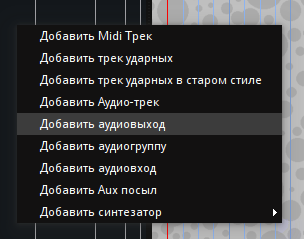
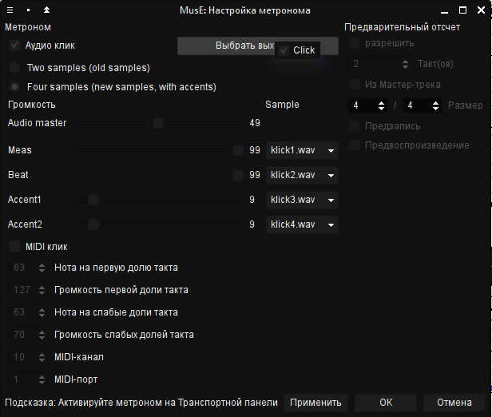
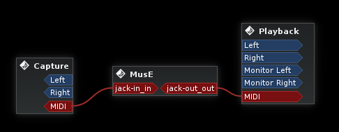

Будет использоваться менеджер Claudia, который позволяет объединять несколько программ в сохраняемых проектах. Claudia можно запустить из вкладки Tools в Cadence (окно Cadence после этого можно закрыть). Большая часть работы ляжет на DAW Ardour, но помимо него будут использоваться и некоторые другие программы, которые, как и связи между ними, желательно запоминать для последующих запусков.

Итак, откроем Claudia и создадим новую студию под названием Музыка. Добавим две комнаты: основную с названием Пульт и дополнительную с названием Эксперименты, для обеих используем шаблон Basic. В первой будет развиваться чистовой проект, а во второй можно будет создавать звуковые эффекты, паттерны и прочее - с последующей записью результата в DAW основной комнаты. Запустим студию. Перезапустить мост ALSA MIDI можно из меню Tools.
Теперь комнаты надо соединить. На следующем рисунке виден принцип подключения входов-выходов нашей студии:

Сохраним созданную студию. Впоследствии можно добавлять или удалять комнаты, менять связи между ними, все правки будут сохраняться с сохранением студии.
Проекты Claudia хранит в XML-файлах, и их можно загружать в комнаты студии. В файловом менеджере создадим папки для файлов композиции. Пусть корневой папкой, в которой хранятся все наши данные будет путь Audio/Composition относительно домашней директории. Для каждого проекта потребуется отдельная дочерняя папка, создадим две: Main и Experiments.
Все пути файлов лучше писать латиницей и без пробелов.
Перейдём в основную комнату, выбрав Пульт из списка слева. Создадим новый проект для этой комнаты (Project/New Project). Укажем полный путь к папке проекта (/home/%username%/Audio/Composition/Main), название - Основной проект. Его можно периодически сохранять (Ctrl+S) - после добавления новых программ или изменения соединений.
Наконец, запустим несколько программ. За основу нашей студии возьмём DAW Ardour версии 4. Для запуска Ardour в проекте:

ardour4 Composition ("Composition" - это имя сессии Ardour, которая будет сохранена в отдельной поддиректории проекта).Ardour, выбираем Level 0. Другие уровни в Ardour не работают, а нулевой означает, что сессии в самом Ardour придётся сохранять вручную. Некоторые программы, поддерживающие уровень 1 и выше, будут автоматически сохранять свои настройки при сохранении проекта в Claudia.При первом запуске Ardour сообщит, что такой сессии ещё не существует, поэтому нужно её создать:

Вернёмся в Claudia и в окне комнаты Пульт подключим Ardour, как на рисунке:

Функции редактирования MIDI хоть и присутствуют в Ardour, но довольно неудобны, особенно при введении нот мышкой. К счастью, для Linux существует классический и хорошо известный секвенсор MusE, который можно использовать при записи MIDI-партий. С другой стороны, в MusE есть возможности DAW, но они менее продвинутые, чем в Ardour. Поэтому связка MusE+Ardour выглядит оптимальной. Попробуем использовать MusE, как вспомогательный инструмент в экспериментальной комнате, а его выход MIDI записывать на дорожки Ardour.
Итак, выберем комнату Эксперименты в Claudia, создадим "Дополнительный проект" c путём /home/%username%/Audio/Composition/Experiments. Нажав F2, добавим приложение MusE, команда muse Composition. И снова, Composition здесь означает имя файла секвенсора (сохранится как Composition.med). Вообще, теоретически, MusE должен поддерживать Level 2 (LASH), но, похоже, версия в KXStudio собрана без этой поддержки, так что выбираем безопасный уровень 0.
Дождавшись загрузки приложения, создадим в MusE два порта JACK MIDI, один для входа, другой для выхода. В меню выбираем Настройки/MIDI-порты/Прогр. синтезаторы. Затем в появившемся диалоговом окне:
При записи с клавиатуры потребуется метроном. Чтобы он заработал, нужен аудио-выход, который создается правым щелчком мыши в свободной области заголовков треков компоновщика. В контекстном меню выбираем пункт Добавить аудиовыход. Переименуем эту дорожку в Click двойным щелчком на названии (MusE плохо поддерживает кириллицу, так что придётся использовать латинские названия). Отредактируем параметры метронома, используя меню Настройки/Метроном. Там нужно выбрать для него выход Click.
 При необходимости метроном включается кнопкой в конце третьей строки панели инструментов. Осталось только в комнате Claudia Эксперименты подключить вход и выход MIDI, а также аудио-выход к мониторному выходу комнаты, как показано на картинке.
Сохраним сессию Ardour, файл MusE и проекты в каждой из комнат Claudia.